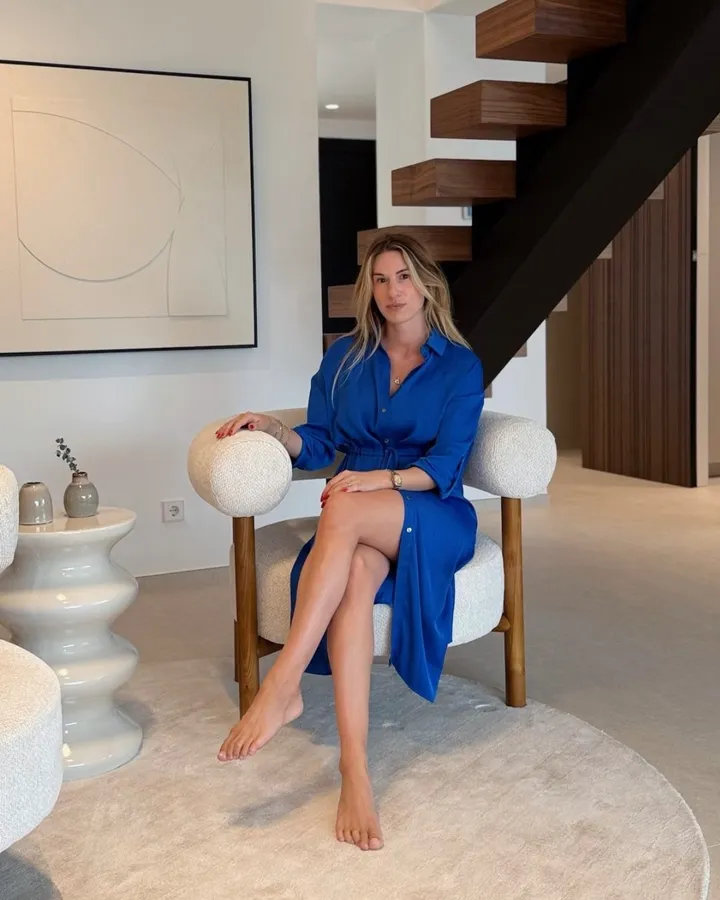

Paula Janson, van Amsterdam naar Marbella.
Een vastgoedpraktijk op menselijke maat, opgebouwd rond één persoon, een klein lokaal team en één enkel principe: in een markt die zo snel beweegt, is het niet de advertentie die het verschil maakt. Het is de makelaar die u begeleidt.

"Uw woning op de Costa del Sol begint met één persoon."
Mijn naam is Paula Janson. Ik ben opgegroeid in Amsterdam, maar mijn internationale ambities en een oprechte liefde voor andere culturen brachten mij uiteindelijk blijvend naar Marbella, waar mijn thuis en mijn onderneming nu gevestigd zijn.
Welkom bij Janson Estate. Een praktijk gebouwd op persoonlijkheid, expertise en oprecht contact. Niet zomaar een makelaar op de Costa del Sol: uw lokale partner, uw vertrouwde adviseur, en uw ogen en oren in Spanje.
Van Amsterdam naar hier.
Paula combineert Nederlandse nuchterheid en transparantie met een warme, internationale, bijna Amerikaanse gastvrijheid, en een diepe, persoonlijke marktkennis.
Paula werd geboren en groeide op in Amsterdam, maar vandaag ademt zij het ritme van het leven op de Costa del Sol. Zij woont hier. Zij kent de markt hier. Zij kent de mensen hier.
En, bovenal, zij kent de woning die u anders nooit zou zien, discreet verhandeld, op tekening of in stille verkoop, lang voordat die een woningportaal bereikt. Bij Paula draait het niet alleen om vierkante meters. Het gaat om uw verhaal, uw plannen, uw toekomst in het zuiden van Spanje.
Als vastgoedadviseur voor de gehele kust begeleidt zij haar cliënten bij elke stap: aankoop en verkoop van woningen, beleggingspanden, commercieel vastgoed, verhuur voor korte en lange termijn, en het volledige A-tot-Z van een verhuizing, van oriëntatie tot overdracht.
Met haar vertrouwde team en een sterk lokaal netwerk biedt Janson Estate een volledig ontzorgend pakket: hypotheekadvies, juridisch advies, notariële coördinatie, zelfs interieurinrichting: alles in één hand.
Drie principes, niets meer.
Eerst luisteren
Ik neem de tijd om het leven te begrijpen dat u voor ogen heeft: uw tijdlijn, uw budget, de manier waarop u hier wilt ontwaken. Dan kijken we naar woningen.
Ruis filteren
De hele markt wordt doorgelicht. Een selectie van tien opties wordt gedeeld, niet driehonderd. De meeste van de beste woningen worden in stille verkoop aangeboden: ik open die deur.
Aanwezig tot de overdracht
Één contactpersoon, tot de dag dat de sleutels wisselen van eigenaar. Advocaat, notaris, NIE, hypotheek, aannemer, al geregeld, klaar om te gaan.
Trots partner van Triple A Marbella.
Bij iedere afgesloten verkoop wordt een vaste donatie gedaan aan het non-profit dierenasiel van Marbella. Discreet, doorlopend, zonder ophef.
Ik hoor graag uw verhaal.
Een kennismakingsgesprek van 30 minuten. Uw tijdlijn, uw budget, uw idee van thuis.